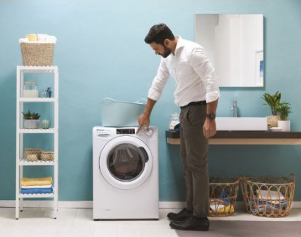
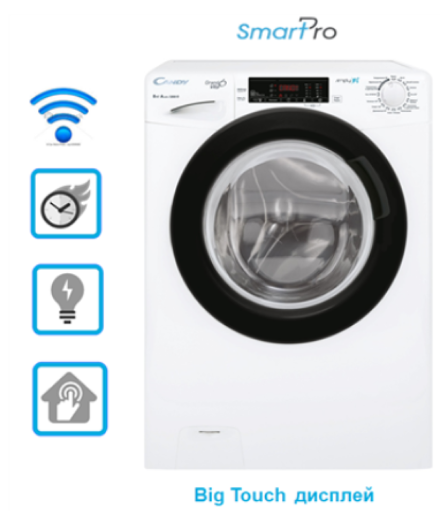

Быстрые циклы стирки и модельный ряд
Быстрые циклы стирки
Smart Pro оснащена 9 быстрыми циклами, для каждого из которых есть полезное применение.
Подробная таблица быстрых программ здесь.
Скачать
Преимущества быстрых циклов
Давай рассмотрим кейсы по использованию быстрых циклов в реальной
жизни.
Ежедневная
Активная жизнь современного офисного работника предполагает загруженный день, где далеко не
всегда хватает времени на себя: приходится задерживаться в офисе или ездить в частые
командировки, а работа требует аккуратного и презентабельного вида, так как любой сотрудник
- это лицо компании. Для этого нужно иметь большой гардероб или часто стирать.
Ситуация
Возвращение из командировки и
череда важных встреч на
ближайшие дни. Необходимо постирать и освежить любимые рубашки
или платья,
которые брали в командировку. И совсем не хочется ждать 2-3
часа, пока машинка
их отстирает.
Решение
Всего за 49 минут при полной
загрузке барабана машина отстирает все вещи. Благодаря системе
Active Motion System, использующей новые алгоритмы вращения
барабана, не придется идти на компромисс между скоростью стирки
и качеством, и пользователь получит высокое качество стирки
класса "А".
Почти все маленькие дети непоседы и за день способны испачкать кучу одежды на прогулке, в
детском саду или даже играя дома. Чтобы ребенок выглядел опрятно, необходимо или часто
стирать, или иметь большой гардероб. Конечно, проще и дешевле стирать.
Ситуация
- Поздно вернулись с дачи из-за пробок, а завтра уже самолет - улетаете в отпуск на море. Многие детские вещи испачканы после активных выходных и нужно постирать любимый сарафан.
- Завтра утренник у дочери в детском саду или поездка сына с классом в другой город. На платье дочери пятно, а вещи сына для поездки испачканы.
Решение
Всего за 49 минут при полной
загрузке барабана машина отстирает все вещи. Благодаря системе
Active Motion System, использующей новые алгоритмы вращения
барабана, не придется идти на компромисс между скоростью стирки
и качеством, и пользователь получит высокое качество стирки
класса "А".
Ежедневная
Цветная одежда требует особенного подхода, не только потому, что это яркие и насыщенные
цвета, но еще и потому, что такая одежда тускнеет и теряет цвет гораздо быстрее, чем черная
или белая.
Ситуация
- Возвращение из летнего отпуска или закрытие дачного сезона; в гардеробе преобладают вещи ярких цветов. Не хочется раздумывать, как правильно отсортировать белье для стирки и как долго его стирать.
- Пользователь предпочитает носить одежду из смешанных тканей, а это современные комбинированные материалы, которые сочетают в себе натуральные и искусственные волокна.
Решение
Режим стирки «Цветные» за 59
минут при температуре 40° поможет отстирать одежду разных цветов
и типов ткани одновременно, а продолжительность цикла не требует
длительного ожидания, позволяя извлечь вещи сразу после
завершения цикла, чтобы вещи не смогли покрасить друг друга.
Идеальная/Хлопок
Лен и хлопок - две ткани с разными характеристиками. Идеально подходят для любого сезона:
легкие, тонкие и дышащие, они являются основными составляющими одежды, от делового стиля,
вечерних платьев до простых футболок.
Ситуация
- «За» экологичность и комфорт, предпочтение вещам из натуральных цветных тканей, которые требуют ежедневной стирки.
- Ткани из синтетики вызывают аллергические реакции, поэтому вся домашняя одежда выполнена из хлопка.
Решение
Режим быстрой стирки
«Идеальная/Хлопок» за 59 минут подойдет для цветных натуральных
тканей из хлопка или льна. Smart Pro при температуре 60° и
половинной загрузке барабана справится с легкими и средними
загрязнениями, убережет ткань от деформации и потери цвета.
Гигиена+
Из-за нехватки времени и спешки накапливается одежда в корзине для белья. Такое решение
удобно для экономии количества стирок, но оно не функционально для слабозагрязненной и
требующей гигиены одежды.
Ситуация
- В доме маленькие дети и постоянная необходимость в чистой одежде. Нет возможности накапливать белье. А детская одежда требует не только частой стирки, но и специальной дополнительной обработки - удаления всех внешних аллергенов.
- У пользователя аллергия, не все стиральные средства отличаются высоким качеством и вымываются до конца. Это приводит к еще большим раздражениям и аллергическим реакциям.
- В условиях пандемии и вынужденных мерах защиты возникает необходимость в частой стирке индивидуальных аксессуаров, если они из ткани.
Решение
Режим стирки «Гигиена+» за 59
минут при температуре 60°. В этом режиме машина особенно
интенсивно выполаскивает потенциальные аллергены – частицы
моющих средств, повышая температуру нагрева и увеличивая число
полосканий.
Спорт+
Активная жизнь современного человека требует быть бодрым и собранным. А занятия спортом
укрепляют иммунитет, помогают быть в форме и справляться со стрессами.
Ситуация
- Пользователь вернулся с пробежки или из спортзала, и есть время только на душ и завтрак, и пора бежать на работу.
- Сын вернулся с тренировки по футболу, а завтра уже основная игра и нет времени, чтобы стирать форму на основном режиме в течение 2-3 часов.
Решение
Всего за 39 минут Main Smart
Pro сделает одежду вновь чистой и свежей, уберет неприятные
запахи. За это время можно успеть постирать и повесить сушиться
форму, и она не будет лежать грязной до момента возвращения
домой после трудового дня. Она успеет высохнуть и можно снова
тренироваться.
Стирка проходит при температуре
30°* и отжиме на средних и минимальных оборотах с коротким
финишным отжимом.
*специальный режим для
высокотехнологичных тканей.
Деликатная
Деликатная стирка – это не только бережная стирка вещей из тонких или рельефных тканей, но и
индивидуальной подход к ним.
Ситуация
- В гардеробе вещи имеют яркие оттенки и рельефные элементы. Например, платье сложного фасона, много декоративных деталей — рюшей, пуговиц, вставок и прочего.
- Пользователь предпочитает ткани из натуральных волокон — шелк, шерсть, или искусственных — эластан, лайкра, органза, вискоза, полиэстер.
- Нужно постирать кружевную блузку для вечеринки или скатерть с кружевом уже после праздника.
Решение
На режиме «Деликатная» за 59
минут стирка
проходит на небольших оборотах и при температуре 40°. Удаление
загрязнений и
пятен достигается за счет подачи значительно увеличенного объема
воды. При
таких условиях создается защита ткани от механического
повреждения, так как
трение снижается.
Короткие эко-циклы
Первая стирка цветной одежды может привести к незначительному изменению оттенка, поэтому
новые вещи нужно стирать отдельно от старых. Кроме того, новые вещи могут содержать
химические вещества после производства или одежду могли примерять в магазине до покупки.
Для таких случаев достаточно будет быстрой стирки.
Ситуация
- Хочется надеть новую юбку или свитер без промедления (30 минут).
- Нужно постирать надетую 1 раз любимую рубашку к завтрашней встрече (30 или 44 минуты).
- Купили новое нижнее белье или ночную рубашку (14 минут).
Решение
Быстрые режимы стирки 14, 30 и
44 минуты при температуре 30-40° легко справятся с такими
задачами, потому что рекомендованы для слабо загрязненных вещей
при небольшой загрузке барабана. Программы экономят воду,
электроэнергию, средство для стирки и время, позволяя получить
отличные результаты.
Вывод

Подводя итог, можно сказать, что Smart Pro соответствует указанной концепции, реализовывая:
- Скорость — через быстрые циклы стирки.
- Удобство — через компактные размеры, простоту управления, продуманность работы.
- Интеллект — через Smart-возмжности приложения simply-Fi.
Благодаря этим составляющим, география продаж этой модели максимально широкая.
Модельный ряд

Загрузка
от 5 до 8 кг
Глубина
от 34 до 44 см
AMS-управление двигателем
+
Люк
Черный/Белый
Модельный ряд можешь изучить в файле.
Скачать